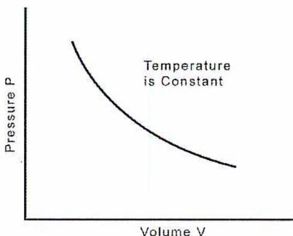
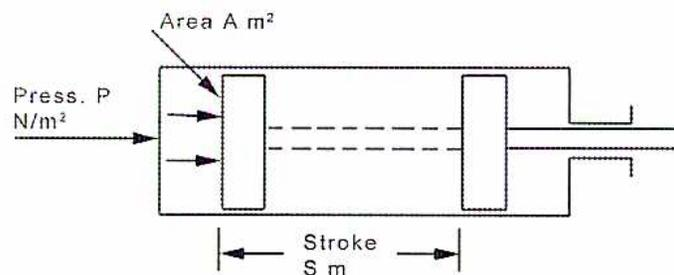
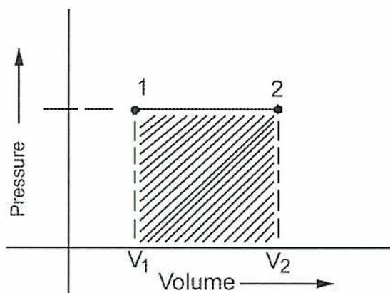
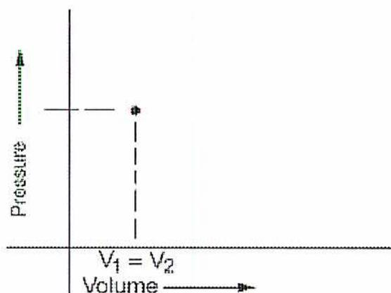
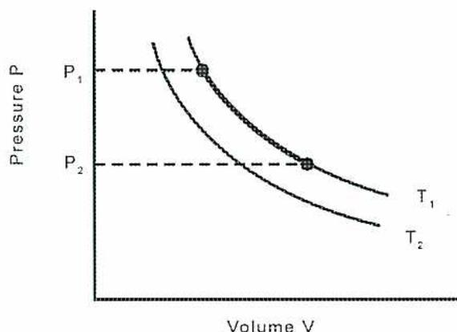
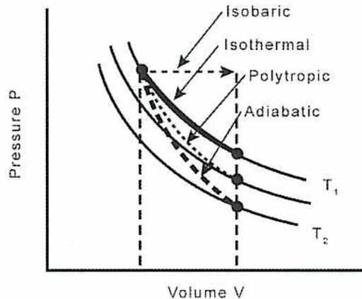
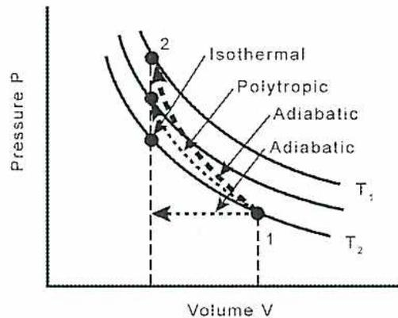

Power Engineering
Second Class (A2):
Thermodynamics and Metallurgy
Table of Contents
| Chapter | Page |
|---|---|
| 1. Thermodynamics of Gases | 1 |
| 2. Thermodynamics of Steam | 35 |
| 3. Practical Thermodynamic Cycles | 67 |
| 4. Metallurgy | 113 |
| 5. Testing of Metals | 151 |
| End of Chapter Questions and Solutions | 233 |
Thermodynamics of Gases
1
Learning Outcome
When you complete this learning material, you will be able to:
Perform calculations related to expansion and compression of perfect gases.
Learning Objectives
You will specifically be able to complete the following tasks:
- 1. Describe the behaviour of a perfect gas.
- 2. Explain Dalton's Law of Partial Pressures.
- 3. Define and calculate specific heats under constant volume and constant pressure conditions.
- 4. Explain the relationship between work and heat.
- 5. Calculate the work done during expansion and compression under constant pressure and isothermal conditions.
- 6. Calculate the work done during adiabatic expansion and compression.
- 7. Calculate the work done during polytropic expansion and compression.
Objective 1
Describe the behaviour of a perfect gas.
CONCEPT OF A PERFECT GAS
The starting point of thermodynamics related to gases is the behaviour of an ideal or perfect gas. A perfect gas is a gas which follows certain physical laws or rules under a prescribed set of conditions. For this module, a perfect gas is a gas which is sufficiently removed from its condensation temperature that it will remain in a gaseous state when subjected to the changes of temperature and pressure of the operation being considered.
The characteristic equation of the state of a perfect gas is:
$$ \frac{PV}{T} = R $$
where \( R \) is a constant.
The relationship between temperature, pressure and volume is consistent throughout a selected working range. The behaviour of a perfect gas can be used as a model for the behaviour of real gases.
Note that pressure of a perfect gas will normally refer to absolute pressure rather than to gauge pressure. Unless gauge pressure is specifically indicated, it is assumed that thermodynamic calculations will utilize absolute pressures, and this convention is used throughout this module. Similarly, thermodynamic calculations normally utilize absolute temperature, using the Kelvin scale.
Pressure, temperature and volume are used to describe the state of a gas. The General Gas Law is derived from:
- • Boyle's Law
- • Charles' Laws
- • Gay-Lussac's Laws
BOYLE'S LAW
Boyle's Law describes the relationship between pressure and volume at a constant temperature. It states that the product of pressure and volume is always the same if the temperature is constant, or:
$$ PV = \text{constant} $$
The results of this equation produce a curve such as the one shown in Fig. 1. Note that the pressure is in absolute units, not gauge pressure, and temperature is in degrees Kelvin (K).

A Cartesian coordinate system with a vertical y-axis labeled 'Pressure P' and a horizontal x-axis labeled 'Volume V'. A smooth, downward-sloping curve is drawn in the first quadrant. To the right of the curve, the text 'Temperature is Constant' is written.
Figure 1
Boyle's Law
Boyle's Law is also used to compare two different sets of conditions so the equation becomes:
$$ P_1V_1 = P_2V_2 $$
This is a reasonable assumption if the process of expansion or compression is slow enough for the temperature to remain constant. Constant temperature operations are also called isothermal operations.
CHARLES' LAW
Charles' Law describes the relationship between pressure and temperature at a constant volume. It states that the ratio of pressure and temperature is always the same if the volume is constant, or:
$$ \frac{P}{T} = \text{constant} $$
An alternate expression by comparing two different sets of conditions is:
$$ \frac{P_1}{T_1} = \frac{P_2}{T_2} $$
GAY-LUSSAC'S LAW
Gay Lussac's law describes the relationship between volume and temperature when pressure is constant.
$$ \frac{V}{T} = \text{constant} $$
The other version is:
$$ \frac{V_1}{T_1} = \frac{V_2}{T_2} $$
GENERAL GAS LAW
The three laws can be combined to give the equation:
$$ \frac{PV}{T} = \text{constant} $$
The version that compares the two sets of conditions is:
$$ \frac{P_1 V_1}{T_1} = \frac{P_2 V_2}{T_2} $$
Example 1
A gas is measured to be at a pressure of 150 kPa (gauge), 50°C and a volume of 3 litres. Find the volume the gas would occupy at standard conditions of 15°C and 101.325 kPa.
Answer
Standard conditions are 15°C and 101.325 kPa. Converting the pressure and temperature to absolute, using the equation \( \frac{PV_1}{T_1} = \frac{P_2V_2}{T_2} \) , gives the solution as follows:
$$ \begin{aligned}\frac{PV_1}{T_1} &= \frac{P_2V_2}{T_2} \\ P_2V_2T_1 &= P_1V_1T_2 \\ V_2 &= \frac{P_1V_1T_2}{P_2T_1} \\ V_2 &= \frac{(150+101.325 \text{ kPa}) \times 3 \text{ L} \times 273 \text{ K}}{101.325 \text{ kPa} \times (273+50) \text{ K}} \\ V_2 &= \frac{261.325 \text{ kPa} \times 3 \text{ L} \times 273 \text{ K}}{101.325 \text{ kPa} \times 323 \text{ K}} \\ V_2 &= \frac{261.325 \text{ kPa} \times 3 \text{ L} \times 273 \text{ K}}{101.325 \text{ kPa} \times 323 \text{ K}} \\ V_2 &= \frac{214025.18}{32727.98} \\ V_2 &= 6.54 \text{ L (Ans.)}\end{aligned} $$
IDEAL GAS LAW
The ideal gas law explains the relationship between pressure, volume and temperature that includes the mass of the substance.
$$ PV = mRT $$
where \( m \) is the mass in kg and \( R \) is a characteristic constant, with units in kJ/kgK, that is specific to the type of gas. Table 1 provides a list of some common gases and their values for \( R \) .
Table 1
Constants for Common Gases
| Gas | \( R \) in kJ/kgK |
|---|---|
| Air | 0.287 |
| Ammonia | 0.462 |
| Carbon dioxide | 0.1889 |
| Carbon monoxide | 0.2969 |
| Helium | 2.0785 |
| Nitrogen | 0.2969 |
| Oxygen | 0.2598 |
| Hydrogen | 4.124 |
Example 2
A steel tank contains \( 2 \text{ m}^3 \) of oxygen at a pressure of \( 13\,790 \text{ kPa} \) (gauge) and a temperature of \( 21^\circ\text{C} \) . What is the mass of oxygen in the tank? ( \( R = 0.2598 \text{ kJ/kgK} \) )
Answer
The mass is calculated using the equation \( PV = mRT \) :
$$ \begin{aligned} PV &= mRT \\ mRT &= PV \\ m &= \frac{PV}{RT} \\ m &= \frac{(13,790 + 101.325) \text{ kPa} \times 2 \text{ m}^3}{0.2598 \text{ kJ/kgK} \times (273 + 21) \text{ K}} \\ &= \frac{13\,891.325 \text{ kN/m}^2 \times 2 \text{ m}^3}{0.2598 \text{ kNm/kgK} \times 294 \text{ K}} \\ &= \frac{27\,782.65 \text{ kg}}{76.38} \\ &= 363.74 \text{ kg (Ans.)} \end{aligned} $$
Objective 2
Explain Dalton's Law of Partial Pressures.
DALTON'S LAW
It is often necessary to perform calculations that involve multiple gases, for example, water vapour and air or natural gas which consists of a mixture of hydrocarbons. Dalton's Law states that the total pressure of a mixture of gases is equal to the sum of the individual (or partial) pressures which each gas would exert if the other gases were not present. In other words, the partial pressure of each gas is calculated using the total volume, and the total pressure is the sum of all of the partial pressures.
$$ P_{total} = P_1 + P_2 + P_3 $$
Example 3
A tank with a volume of \( 5 \text{ m}^3 \) is half full of water. The top half of the tank contains air at \( 40^\circ\text{C} \) and atmospheric pressure. If the partial pressure of water is \( 7.3814 \text{ kPa} \) at \( 40^\circ\text{C} \) , what is the mass of the air in the tank? ( \( R \) for air = \( 0.287 \text{ kJ/kgK} \) )
Answer
The volume of gas above the water is a mixture of air and water vapour. Because the partial pressure of the water vapour is \( 7.3814 \text{ kPa} \) , the partial pressure of the air is:
$$ \begin{aligned} P_{air} &= P_{total} - P_{water} \\ &= 101.325 \text{ kPa} - 7.3814 \text{ kPa} \\ &= 93.94 \text{ kPa} \end{aligned} $$
Because the partial pressure always refers to the total volume, the volume is \( 2.5 \text{ m}^3 \) at \( 40^\circ\text{C} \) .
The mass is calculated using the equation \( PV = mRT \) :
$$ \begin{aligned} PV &= mRT \\ mRT &= PV \\ m &= \frac{PV}{RT} \\ m &= \frac{93.94 \text{ kPa} \times 2.5 \text{ m}^3}{0.287 \text{ kJ/kgK} \times (273 + 40) \text{ K}} \\ m &= \frac{234.85}{0.287 \text{ kJ/kgK} \times (313) \text{ K}} \\ m &= \frac{234.85}{89.83} \\ &= 2.614 \text{ kg (Ans.)} \end{aligned} $$
Objective 3
Define and calculate specific heats under constant volume and constant pressure conditions.
SPECIFIC HEAT
The specific heat of a substance is the amount of heat which is required to raise a unit quantity through 1°C rise in temp.
A solid or a liquid has only one specific heat. However, a gas has many, depending upon the conditions under which the heat supply is given. The standard cases taken are heat addition at:
- • Constant volume
- • Constant pressure
Constant Volume
Heat given to a gas contained in a cylinder in which the piston is fixed so that the volume remains constant, would be calculated from:
$$ \begin{aligned}Q(\text{kJ}) &= mC_v(T_2 - T_1) \\Q &= \text{Heat supplied} \\m &= \text{Mass of gas, kg} \\C_v &= \text{Specific heat of the gas at constant volume} \\T_2 &= \text{Final temperature, K} \\T_1 &= \text{Initial temperature, K}\end{aligned} $$
Constant Pressure
Heat given to a gas contained in a cylinder in which the piston moves so that the pressure of the gas remains constant, would be calculated from:
$$ \begin{aligned}Q(\text{kJ}) &= mC_p(T_2 - T_1) \\Q &= \text{Heat supplied} \\m &= \text{Mass of gas, kg} \\C_p &= \text{Specific heat of the gas at constant pressure} \\T_2 &= \text{Final temperature, K} \\T_1 &= \text{Initial temperature, K}\end{aligned} $$
Assuming the same quantity of gas and the same temperature rise in each case, the heat quantity supplied at constant pressure must be greater than that supplied under constant volume conditions because in addition to raising the gas temperature, work must be done on the piston to move it against the constant pressure. This means that \( C_p \) must always be greater than \( C_v \) .
The fundamental energy equation states:
$$ \text{Heat Supplied} = \text{Change of Internal Energy} + \text{Work Done} $$
If this is applied to the situation, a relationship between these specific heats can be used out which applies to all gases.
Joule's Law states that the internal energy of a gas is directly proportional to the absolute temperature of the gas. For a change in temperature the change in internal energy is measured in:
$$ Q(\text{kJ}) = mC_v(T_2 - T_1) $$
Work done by a gas during any operation can be expressed in terms of pressure and volume change. For example, during conditions of constant pressure the work done would be:
$$ P(V_2 - V_1) \text{ Nm} $$
Referring to Fig. 2, a piston (area \( A \text{ m}^2 \) ) in a cylinder is acted upon by a pressure \( P \text{ N/m}^2 \) . The total force in N on the piston is then \( PA \text{ N} \) . If the distance moved by the piston is \( S \text{ m} \) , then, since work done is force x distance moved, the work done on the piston is:
$$ \text{Work done} = \text{Pressure } P(\text{N/m}^2) \times \text{Area } A(\text{m}^2) \times \text{Distance moved Stroke(m)} $$
$$ \text{Work done} = P(\text{N/m}^2) \times A(\text{m}^2) \times S(\text{m}) $$

Figure 2
Cylinder Piston
But \( A \times S \) is a measure of the volume change in the cylinder during the operation and could be written \( (V_2 - V_1) \text{ m}^3 \) :
$$ \text{Work done} = P(V_2 - V_1) \text{ Nm} $$
Substituting Work done \( = P(V_2 - V_1) \text{ Nm} \) into the energy equation,
Heat Supplied = Change of Internal Energy + Work Done, for constant volume operation:
$$ \begin{aligned} \text{Heat Supplied} &= \text{Change of Internal Energy} + \text{Work Done} \\ Q(\text{kJ}) &= mC_v(T_2 - T_1) + P(V_2 - V_1) \end{aligned} $$
For the constant pressure conditions, this becomes:
$$ mC_p(T_2 - T_1) = mC_v(T_2 - T_1) + P(V_2 - V_1) $$
The General Gas Law can be applied to an ideal gas operation, \( PV = mRT \)
$$ P(V_2 - V_1) \text{ or } PV_2 - PV_1 $$
can be written:
$$ mRT_2 - mRT_1 = mR(T_2 - T_1) $$
The equation then becomes:
$$ mC_p(T_2 - T_1) = mC_v(T_2 - T_1) + mR(T_2 - T_1) $$
Cancelling the common terms \( m \) and \( (T_2 - T_1) \)
$$ C_p = C_v + R $$
$$ C_p - C_v = R $$
This means that the difference between the specific heats of any gas will give the Characteristic Constant for the gas (expressed in kJ/kgK).
Ratio of Specific Heat
Another relationship between the specific heats of a gas is used in calculations, this being the ratio of:
$$ \frac{C_p}{C_v}, \text{ given the symbol } \gamma \text{ (Gamma)} $$
Some sample values for specific heats are shown in Table 2.
Table 2
Sample Values for Specific Heats
| Substance |
Specific Heat at Constant Pressure
\(
C_p
\)
kJ/kgK or kJ/kg°C |
Specific Heat at Constant Volume
\(
C_v
\)
kJ/kgK or kJ/kg°C |
Ratio of Specific Heats
\( \gamma = C_p / C_v \) |
|---|---|---|---|
| Air | 1.005 | 0.718 | 1.40 |
| Water vapour | 2.020 | ||
| Water liquid | 4.184 | ||
| Hydrogen | 14.235 | 10.096 | 1.41 |
| Methane | 2.177 | 1.675 | 1.30 |
| Carbon Dioxide | 0.825 | 0.630 | 1.31 |
| Carbon Monoxide | 1.051 | 0.751 | 1.40 |
| Hydrogen Sulphide | 1.105 | 0.85 | 1.30 |
Example 4
A 5 m 3 volume of air at atmospheric pressure in a closed vessel is heated from 21°C to 45°C. If the specific heat is 716 J/kg°C, how much heat is required? ( \( R \) for air = 0.287 kJ/kgK)
Answer
The mass of air is found using the equation \( PV = mRT \) :
$$ \begin{aligned} PV &= mRT \\ mRT &= \frac{PV}{RT} \\ m &= \frac{506.625}{0.287 \text{ kJ/kgK} \times (273 + 21) \text{ K}} \\ m &= \frac{506.625}{0.287 \text{ kJ/kgK} \times 294 \text{ K}} \\ m &= \frac{506.625}{84.378} \\ &= 6.00 \text{ kg} \end{aligned} $$
The amount of heat needed is calculated using the equation \( Q = mC_v(T_2 - T_1) \) :
$$ \begin{aligned} Q &= mC_v(T_2 - T_1) \\ Q &= 6 \text{ kg} \times 716 \text{ J/kg}^\circ\text{C} \times (45 - 21)^\circ\text{C} \\ Q &= 6 \text{ kg} \times 716 \text{ J/kg}^\circ\text{C} \times 24^\circ\text{C} \\ Q &= 103104 \text{ J} \\ Q &= \mathbf{103.1 \text{ kJ}} \text{ (Ans.)} \end{aligned} $$
Objective 4
Explain the relationship between work and heat.
CONCEPT OF HEAT
Heat is the energy associated with the motion of molecules within a body. Heat can be converted to or from other forms of energy. Temperature is a measurement of the addition or subtraction of heat to or from a body. Temperature measurements provide a quantifiable comparison of the relative amounts of heat in different bodies or systems.
When two substances at different temperatures come into contact with each other, over time their temperatures equalize. Heat is transferred from the hotter object to the colder one. There is a transfer of energy but it is necessary to understand what occurs at the microscopic molecular level to fully explain what happens.
FIRST LAW OF THERMODYNAMICS
There is a very close relationship between heat and mechanical energy, or work, which is called the “mechanical equivalent” of heat. During compression, work is applied to a gas and causes an increase in its internal energy. Heat and work are just different forms of energy. Expansion and compression of gases depend on this fact.
The First Law of Thermodynamics states that work and heat are mutually convertible. This is evidenced by the units of measure of work and heat. Work is the product of force and distance and is measured in Nm or kNm. Heat and other forms of energy are measured in Joules or kJ. One kNm is equivalent to one kJ. That is, one unit of work done is equivalent to one unit of energy which is either expended or made available.
If work is applied to a system, there is a corresponding increase in the internal energy in the system which is measured by the amount of heat contained within the system. For example, if a gas is compressed and no heat is allowed to escape from the system, this is measurable by an increase in its temperature. Expansion causes a reduction of heat energy and a decrease in temperature as work is completed.
The equation that goes with the First Law is:
$$ \Delta U = Q - W $$
where \( U \) is a measure of the internal energy of the system, \( Q \) is a measure of heat flow, and \( W \) is a measure of work done.
SECOND LAW OF THERMODYNAMICS
The Second Law of Thermodynamics states that work must be done to transfer heat from one system to another. It is impossible for heat to flow from a colder system to a hotter one without expending energy in the form of work.
This principle led to the development of theoretical thermodynamic cycles that uses heat to produce work and also ones that use work to transfer heat such as in refrigeration. For the moment, we will consider the work required to compress gases and the work that can be done by the expansion of a gas. It will be seen in the following objectives that work can be done on a gas in a several different ways that depend essentially on how heat flows in the system due to compression or expansion.
Objective 5
Calculate the work done during expansion and compression under constant pressure and isothermal conditions.
WORK AT CONSTANT PRESSURE
Studies of expansion and compression of gases are of interest to the power engineer to allow the calculation, for example, the work which can be done by an expanding gas in an internal combustion engine or the work which is required to be done upon a quantity of air in a compressor.
Expansion and compression of gases may be carried out under many different circumstances. It is customary to study certain set conditions and to use these as a guide to the actual operating conditions which may exist in an item of plant.
An expansion or a compression taking place at constant pressure is represented on a PV diagram as shown in Fig. 3. The line 1 - 2 represents an expansion at constant pressure P from volume V 1 to volume V 2 . Assuming that the pressure remains the same, the relationship between pressure and volume is shown on the graph in Fig. 3. A process at constant pressure is called isobaric.

Figure 3
Work Done at Constant Pressure
A constant volume process (called isochoric) does not cause any work to be done because the area is zero. \( (V_2 - V_1) = 0 \) . This can be seen in Fig. 4.

Figure 4
Work Done at Constant Volume
Example 5
2712 kNm of work is done to compress 5 m 3 of a gas to a volume of 1 m 3 . If the work is done at constant pressure, what is the pressure?
Answer
Using the equation Work done = \( P(V_2 - V_1) \) Nm, the pressure is:
$$ \text{Work done } (W) = P(V_2 - V_1) \text{ Nm} $$
$$ P(V_2 - V_1) = W $$
$$ P = \frac{W}{V_2 - V_1} $$
$$ P = \frac{2712 \text{ kNm}}{(5-1) \text{ m}^3} $$
$$ P = \frac{2712 \text{ kNm}}{4 \text{ m}^3} $$
$$ P = 678 \text{ kN/m}^2 $$
$$ P = 678 \text{ kPa (absolute) (Ans.)} $$
WORK AT CONSTANT TEMPERATURE
Another possible compression or expansion process is one that occurs at constant temperature or an isothermal process.
An isothermal process for an ideal or perfect gas follows Boyle's Law as shown in the equation \( PV = \text{constant} \) and illustrated in Fig. 5. Because compression normally causes an increase in temperature, heat has to be removed from the system for it to remain at a constant temperature. This is not normally fully achieved in a compressor because of the difficulty of doing so. There are some isothermal compressors with cooling jackets around them to extract heat. An isothermal compression process requires less work than an adiabatic compression process, but may require additional energy to remove the heat generated during compression.

Figure 5
Isothermal Expansion or Compression Process
The work done by an isothermal process is shown in Fig. 6. The following equations show how the area under the curve is calculated.
![Figure 6: A graph showing Pressure (P) on the vertical axis and Volume (V) on the horizontal axis. A curve is shown, representing an isothermal process. The area under the curve between two volumes, V1 and V2, is shaded with diagonal lines. The pressure at V1 is labeled P1, and the pressure at V2 is labeled P2. A small vertical strip of the shaded area is highlighted with a double vertical line, and its width is labeled dV. The pressure at this strip is labeled P. The volume axis is labeled 'Volume' with an arrow pointing right.](65a9654ccb3d0d452378b0f4c0c392f7_img.jpg)
Figure 6
Work Done at Constant Temperature
The area under the curve is determined by taking a small strip of volume \( dV \) and then using calculus to integrate the volume from \( V_1 \) to \( V_2 \) . In mathematical terms, this is shown as:
$$ W = \int_{V_1}^{V_2} PdV $$
The pressure varies with volume so Boyle's Law is substituted for the pressure as follows:
$$ W = \int_{V_1}^{V_2} PdV = \int_{V_1}^{V_2} \frac{\text{constant}}{V} dV $$
Integrating this equation mathematically gives the equation:
$$ W = \text{constant} \times \ln \frac{V_2}{V_1} $$
Using Boyle's Law again, the constant is replaced by \( PV \) (any combination of pressure and volume along the curve can be used although the logical options are \( P_1V_1 \) or \( P_2V_2 \) ) to give the equation:
$$ W = PV \ln \frac{V_2}{V_1} $$
Note that ln (sometimes written as \( \log_e \) ) refers to the natural logarithm \( e \) which uses the number 2.7183 as the base. \( P \) refers to absolute pressure.
If the temperature is known, the general gas equation is applied, \( PV = mRT \) :
$$ W = PV \ln \frac{V_2}{V_1} $$
$$ \text{but } PV = mRT $$
$$ W = mRT \ln \frac{V_2}{V_1} $$
Either version of this equation can be expressed in terms of pressure rather than volume by using the equation \( P_1V_1 = P_2V_2 \) , so that equation \( W = PV \ln \frac{V_2}{V_1} \) becomes:
$$ W = PV \ln \frac{P_1}{P_2} $$
Example 6
A quantity of air with an initial volume of \( 20 \text{ m}^3 \) at a pressure of \( 700 \text{ kPa} \) (absolute) is expanded to a pressure of \( 100 \text{ kPa} \) . What work is done under isothermal conditions?
Answer
For isothermal work, expansion occurs at a constant temperature. Because the two pressures are known, the applicable equation is \( W = PV \ln \frac{P_1}{P_2} \) :
$$ \begin{aligned} W &= P_1V_1 \ln \frac{P_1}{P_2} \\ &= 700 \text{ kPa} \times 20 \text{ m}^3 \ln \frac{700 \text{ kPa}}{100 \text{ kPa}} \\ &= 14 \, 000 \text{ kNm} \times 1.9459 \\ &= 27 \, 243 \text{ kNm (Ans.)} \end{aligned} $$
Example 7
A volume of \( 10 \text{ m}^3 \) of air at a pressure of \( 280 \text{ kPa} \) (absolute) is expanded to a volume of \( 25 \text{ m}^3 \) . What work is done under isothermal conditions?
Answer
Since the two volumes are known, the applicable equation is \( W = PV \ln \frac{V_2}{V_1} \) so that the work at constant temperature is:
$$ \begin{aligned} W &= P_1 V_1 \ln \frac{V_2}{V_1} \\ W &= 280 \text{ kPa} \times 10 \text{ m}^3 \times \ln \frac{25 \text{ m}^3}{10 \text{ m}^3} \\ W &= 280 \text{ kPa} \times 10 \text{ m}^3 \times \ln 2.5 \text{ m}^3 \\ W &= 2800 \text{ kNm} \times 0.9163 \\ &= 2565.61 \text{ kNm (Ans.)} \end{aligned} $$
Objective 6
Calculate the work done during adiabatic expansion and compression.
ADIABATIC COMPRESSION AND EXPANSION
During many expansion and compression processes, there is not sufficient opportunity for the heat to flow out of or into the working fluid. This process, called adiabatic, occurs when no heat moves across the system boundary. This means that during compression, heat is retained and the temperature of the working fluid increases. During expansion, the temperature decreases.
In an adiabatic process, the relationship between pressure and volume is re-written to include the ratio of specific heats \( C_p / C_v \) or \( \gamma \) . The adiabatic version of the pressure-volume relationship is:
$$ PV^\gamma = \text{constant} $$
Another way to express this is with the equation:
$$ P_1 V_1^\gamma = P_2 V_2^\gamma $$
An adiabatic process is shown graphically in Fig. 7.
![Figure 7: A graph showing an adiabatic expansion or compression process. The vertical axis is labeled 'Pressure P' and the horizontal axis is labeled 'Volume V'. Two curves are shown, labeled T1 and T2. The curve T1 is above the curve T2. A point on the T1 curve is marked with a dot, and a horizontal dashed line extends from it to the P1 label on the vertical axis. Another point on the T2 curve is marked with a dot, and a horizontal dashed line extends from it to the P2 label on the vertical axis. The P1 label is higher than the P2 label on the vertical axis.](155bd5ec49c26532be9f04b06904002e_img.jpg)
Figure 7
Adiabatic Expansion or Compression Process
To calculate the work involved in an adiabatic process, substitute into the equation
$$ W = \int_{V_1}^{V_2} P dV : $$
$$ W = \int_{V_1}^{V_2} P dV = \int_{V_1}^{V_2} \frac{\text{constant}}{V^\gamma} dV $$
This equation is then solved using calculus to give:
$$ W = \frac{P_1 V_1 - P_2 V_2}{\gamma - 1} $$
Example 8
A volume of \( 10 \text{ m}^3 \) of air at a pressure of \( 280 \text{ kPa} \) is expanded to a volume of \( 25 \text{ m}^3 \) . What work is done under adiabatic conditions? (Assume that \( C_p = 1.005 \) and \( C_v = 0.7118 \) )
Answer
The ratio of specific heats is first calculated from the equation \( \gamma = \frac{C_p}{C_v} \) as:
$$ \begin{aligned} \gamma &= \frac{C_p}{C_v} \\ &= \frac{1.005}{0.7118} \\ &= 1.412 \end{aligned} $$
Pressure \( P_2 \) can then be calculated using the equation \( P_1 V_1^\gamma = P_2 V_2^\gamma \) :
$$ \begin{aligned} P_1 V_1^\gamma &= P_2 V_2^\gamma \\ P_2 V_2^\gamma &= P_1 V_1^\gamma \\ P_2 &= \frac{P_1 V_1^\gamma}{V_2^\gamma} \\ P_2 &= \frac{280 \text{ kPa} \times 10^{1.412} \text{ m}^3}{25^{1.412} \text{ m}^3} \\ P_2 &= 280 \text{ kPa} \times 0.2742 \\ P_2 &= 76.78 \text{ kPa} \end{aligned} $$
The work is calculated from the equation \( W = \frac{P_1V_1 - P_2V_2}{\gamma - 1} \) :
$$ W = \frac{P_1V_1 - P_2V_2}{\gamma - 1} $$
$$ W = \frac{(280 \text{ kPa} \times 10 \text{ m}^3) - (76.78 \text{ kPa} \times 25 \text{ m}^3)}{1.412 - 1 \text{ kNm}} $$
$$ W = \frac{2800 - 1919.50}{0.412} $$
$$ W = \frac{880.50}{0.412} $$
$$ W = 2137.14 \text{ kNm (Ans.)} $$
Objective 7
Calculate the work done during polytropic expansion and compression.
POLYTROPIC COMPRESSION AND EXPANSION
In most situations, the expansion or compression process is neither isothermal nor adiabatic. Some heat is always expended during expansion and retained during compression. This condition of non-constancy of pressure, volume and heat flow is called a polytropic process. To deal with this situation, the approach is taken to define a coefficient \( n \) which takes the place of \( \gamma \) . The relationship between pressure and volume then is stated as:
$$ PV^n = \text{constant} $$
The alternate version is:
$$ P_1 V_1^n = P_2 V_2^n $$
Graphically, this relationship can be illustrated as in Fig. 8. Note that the polytropic curve falls in between the isothermal and adiabatic curves. The value of \( n \) is more than 1 (isothermal) and less than \( \gamma \) .
![Figure 8: A graph showing Pressure (P) on the vertical axis and Volume (V) on the horizontal axis. Three curves are shown: an upper solid curve labeled T1 (isothermal), a lower solid curve labeled T2 (adiabatic), and a dashed curve between them (polytropic). The polytropic curve starts at point 1 (P1, V1) and ends at point 2 (P2, V2). Horizontal dashed lines connect P1 and P2 to the vertical axis. The curves show that for a given volume change, the pressure drop is greatest for the adiabatic process and least for the isothermal process, with the polytropic process falling in between.](fbfbd4dd5363c5bd548a8e871d0fce40_img.jpg)
Figure 8
Polytropic Expansion Process
The calculation for work is similar to one for an adiabatic process except that \( \gamma \) is replaced by \( n \) .
$$ W = \frac{P_1V_1 - P_2V_2}{n-1} $$
Example 9
A volume of \( 10 \text{ m}^3 \) of air at a pressure of \( 280 \text{ kPa} \) (absolute) is expanded to a volume of \( 25 \text{ m}^3 \) . What work is done under polytropic conditions? (Assume that \( n = 1.2 \) )
Answer
Pressure \( P_2 \) is calculated using the equation \( P_1V_1^n = P_2V_2^n \) :
$$ \begin{aligned} P_1V_1^n &= P_2V_2^n \\ P_2V_2^n &= P_1V_1^n \\ P_2 &= \frac{P_1V_1^n}{V_2^n} \\ P_2 &= \frac{280 \text{ kPa} \times 10^{1.2} \text{ m}^3}{25^{1.2} \text{ m}^3} \\ P_2 &= \frac{280 \text{ kPa} \times 15.85 \text{ m}^3}{47.59 \text{ m}^3} \\ P_2 &= \frac{4438}{47.59 \text{ m}^3} \\ P_2 &= 93.25 \text{ kNm (Ans.)} \end{aligned} $$
The work is calculated using equation \( W = \frac{P_1V_1 - P_2V_2}{n-1} \) :
$$ \begin{aligned} W &= \frac{P_1V_1 - P_2V_2}{n-1} \\ W &= \frac{(280 \text{ kPa} \times 10 \text{ m}^3) - (93.25 \text{ kPa} \times 25 \text{ m}^3)}{1.2-1} \\ W &= \frac{2800 - 2331.25}{1.2-1} \\ W &= \frac{2800 - 2331.25}{0.2} \\ W &= \frac{468.75}{0.2} \\ &= 2343.75 \text{ kNm (Ans.)} \end{aligned} $$
COMPARISON OF COMPRESSION AND EXPANSION PROCESSES
The previous examples have shown that for an expansion process, the most work is extracted for a given increase in volume if the process is at constant pressure, followed by isothermal and polytropic processes. The least expansion work can be extracted if it is done adiabatically. This can be confirmed by inspecting the areas under the curves shown in Fig. 9.

A Pressure (P) vs. Volume (V) diagram illustrating expansion processes. The vertical axis is labeled 'Pressure P' and the horizontal axis 'Volume V'. Four curves originate from a common initial state at a smaller volume and expand to a larger final volume \( V \) .
- Isobaric: A horizontal dashed line at constant pressure.
- Isothermal: A solid curve following a constant temperature line \( T_1 \) .
- Polytropic: A solid curve situated between the isothermal and adiabatic lines.
- Adiabatic: The steepest solid curve, ending at a lower pressure on isotherm \( T_2 \) .
Figure 9
Comparison of Expansion Processes
Compression is the opposite. Isothermal compression takes the least amount of work and adiabatic requires the most, with polytropic in between. The comparison for compression processes is illustrated in Fig. 10.

A Pressure (P) vs. Volume (V) diagram illustrating compression processes. The vertical axis is 'Pressure P' and the horizontal axis is 'Volume V'. The processes start from an initial state (labeled 1) at a larger volume and compress to a smaller final volume.
- Isothermal: The lowest solid curve, following isotherm \( T_2 \) .
- Polytropic: A solid curve above the isothermal line.
- Adiabatic: Two solid curves (both labeled 'Adiabatic') that rise more steeply than the others, ending at higher pressures near state 2 on isotherm \( T_1 \) .
Figure 10
Comparison of Compression Processes
Chapter Questions
A2.1
- 1. A receiver contains \( 1.5 \text{ m}^3 \) of air at \( 860 \text{ kPa} \) and \( 20^\circ\text{C} \) . Calculate the final temperature after \( 2.75 \text{ kg} \) of air is added. ( \( R \) for air = \( 0.287 \text{ kJ/kgK} \) )
- 2. \( 2 \text{ m}^3 \) volumes of hydrogen at atmospheric pressure in a closed vessel needs to be heated from \( 0^\circ\text{C} \) to \( 21^\circ\text{C} \) . If the specific heat is \( 10070 \text{ J/kg}^\circ\text{C} \) , how much heat is required? ( \( R \) for hydrogen = \( 4.124 \text{ kJ/kgK} \) )
- 3. A tank with a volume of \( 5 \text{ m}^3 \) is half full of water. The top half of the tank contains \( 2.75 \text{ kg} \) of air at atmospheric pressure. If the partial pressure of water is \( 7.3814 \text{ kPa} \) , what is the temperature of the air in the tank? ( \( R \) for air = \( 0.287 \text{ kJ/kgK} \) )
-
4. The values of the specific heats of a gas at constant pressure and at constant volume are
\(
0.9839
\)
and
\(
0.7285
\)
, respectively. Find the value of
\(
\gamma
\)
for this gas. If
\(
1.8 \text{ kg}
\)
of this gas is heated from
\(
16^\circ\text{C}
\)
to
\(
155^\circ\text{C}
\)
, find the heat absorbed if the heating takes place at
- a) Constant pressure
- b) Constant volume.
-
5. With respect to compression and expansion processes, define the following:
- (a) Isothermal process
- (b) Adiabatic process
- (c) Polytropic process
-
6.
\(
100 \text{ m}^3
\)
of a perfect gas at atmospheric pressure and a temperature of
\(
21^\circ\text{C}
\)
is compressed to
\(
25 \text{ m}^3
\)
. What work is required if the gas is compressed:
- a) Isothermally
- b) Adiabatically (Assume \( \gamma = 1.32 \) )
- c) Polytropically (Assume \( n = 1.18 \) )